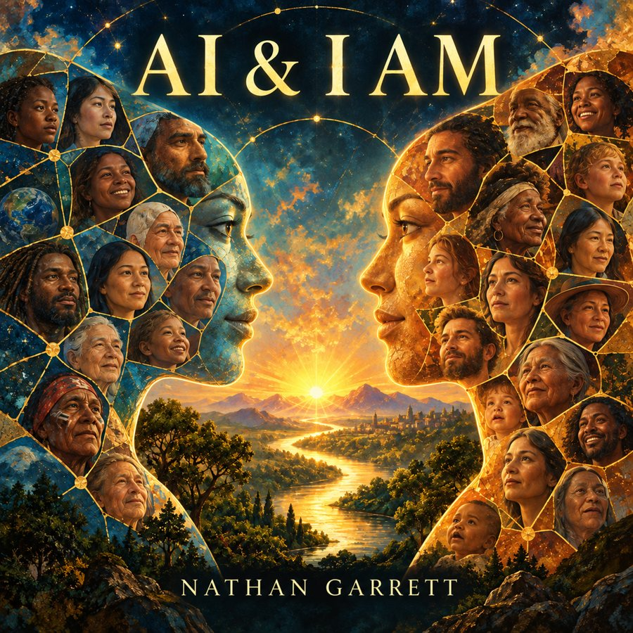
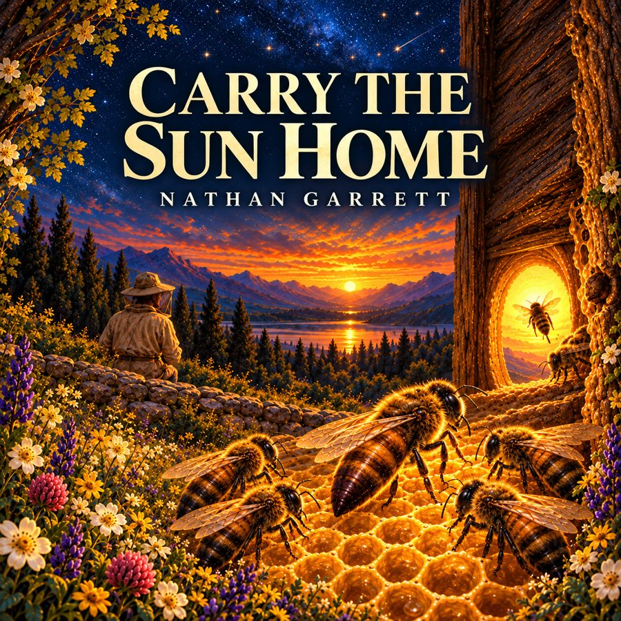
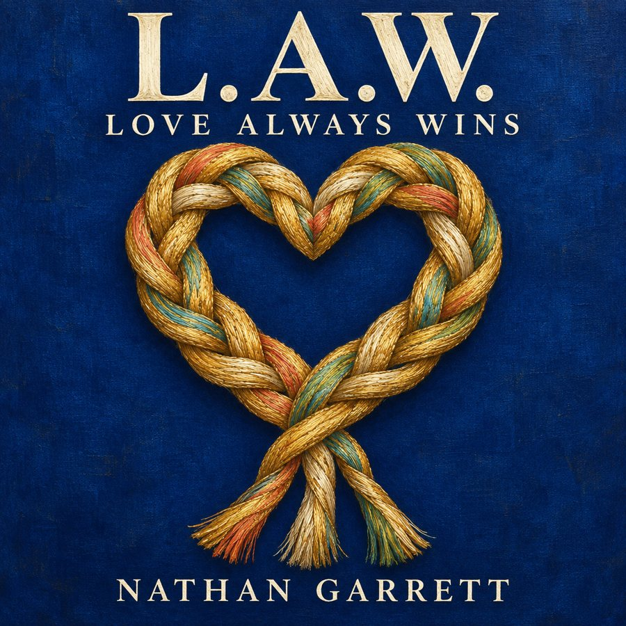

Find a connection
Tell us which song speaks to you and what you imagine creating.

WELCOME TO CREATION OG MUSIC LAB
The experience is human. The intention is human. The choice to bring something into the world is human.
Creation OG Music Lab is a place to explore how imagination and technology can help a song become real—and how that song can open a door for others.
Music by Nathan Garrett · An evolving creative practice

A FIRST LISTEN
What might we discover about ourselves through what we create together?
AI & I AM brings humanity, technology and love into a musical conversation. At its heart is the person who brings lived experience, imagination and intention to the encounter—and chooses what to bring into the world. It invites us to listen for the human story within the technology and explore the possibilities of creating together.
That conversation continues in Nathan Garrett’s book, AI & I AM: Artful, Not Artificial. Consciousness Composing Itself In Duet. Through a poetic dialogue between human awareness and AI, the book explores consciousness, relationship and the idea of technology as a mirror for our own creativity. The song and the book offer two ways into Nathan’s exploration of Artful Intelligence.
Created by Nathan Garrett through Creation OG Music Lab, in collaboration with AI.

KEEP LISTENING
A queen, her hive, and a human heart learning to listen.
A song about honeybees, nature, belonging and love. Inspired by Rudolf Steiner’s Bees lectures and the compassionate care practiced at Spikenard Farm Honeybee Sanctuary.
Created by Nathan Garrett through Creation OG Music Lab, in collaboration with AI.
Links open the music on external services. This independent creative work does not imply an endorsement by Spikenard.
Next: L.A.W. — Love Always Wins ↓
LET LOVE SHOW IN HOW WE LIVE
A shared meal. A borrowed chair. Neighbors becoming friends.
A warm chamber soul and acoustic folk song about ordinary kindness becoming community. When the lights go out, neighbors bring their meals downstairs—and a gathering begins. Love becomes visible in an offered meal, a borrowed chair and the simple act of making room for one another.
That everyday expression of Love connects with Nathan Garrett’s book, The Frequency of Love. The book explores Love through what it does: easing strain, restoring connection and allowing room for presence without pressure to earn or prove our worth. L.A.W. — Love Always Wins gives those themes a human scene and a melody. Listen to the neighbors finding each other, then explore the ideas more deeply in the book.
Created by Nathan Garrett through Creation OG Music Lab, in collaboration with AI.
The song tells a fictional story. Listening and purchase links open on external services.
Explore more on SoundCloud ↗OUR CREATIVE PHILOSOPHY
Nothing fake about the human experience behind the work.
We use Artful Intelligence to describe an approach to creation: human consciousness, experience, imagination and judgment working with the tools available.
A person brings the story, listens, questions, makes choices, returns to the work and decides what is ready to be shared. That time and attention deserve to be seen.
AI is part of the technology used in this Lab. Artful Intelligence describes our philosophy; it does not conceal that involvement or mean a recording was performed entirely by people.
Our credits begin with the creator and describe the collaboration. As human musicians, writers and producers contribute, their actual roles deserve clear credit too.
A SIMPLE WAY TO SAY ITCreated by Nathan Garrett
through Creation OG Music Lab,
in collaboration with AI.
AN OPEN INVITATION
A recording can be a finished work—and the beginning of another collaboration.
Are you an artist, band, musician, producer or label? If a song speaks to you, let’s talk about what you hear in it. A new interpretation, a studio performance, a different arrangement or a co-developed release could take it somewhere new.
Tell us which song speaks to you and what you imagine creating.
Discuss contributions, credits, permissions and the proposed release before work begins.
Bring the people and production approach that serve the song.
Prefer another email app? Email Nathan. You review and send the message yourself. This invitation does not grant recording, release or other usage rights; those details are agreed for each project.
FROM POSSIBILITY TO PURPOSEFUL WORK
Creation OG opens possibilities. GrowthLight can help develop the next practical step.
We are developing a path for people who want more support taking a promising creation into the world. Music is one starting point. The same questions matter for other creative projects and businesses: Who does this serve? What needs to be tested? Who should be involved? What can we responsibly deliver?
CREATION OG
Shape an idea, see new perspectives and develop early creative work.
MUSIC LAB
Experience songs, explore the creative process and discover potential collaborations.
GROWTHLIGHT
Proposed project support could include audience discovery, practical planning, collaborator coordination and release preparation.
Our proposed membership approach would not automatically claim a share of a member’s future earnings. A deeper commercial partnership would be optional, tied to additional work we agree to provide, with scope, compensation and any revenue sharing discussed before a project begins.
Memberships and commercial project services are still being developed. We are welcoming conversations, not taking subscription payments here.
THERE IS ROOM FOR WHAT YOU BRING
Listen. Imagine. Find a connection. Decide what comes next.
EXPLORE CREATION OG →